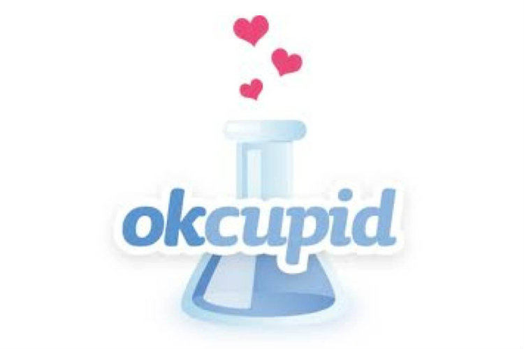
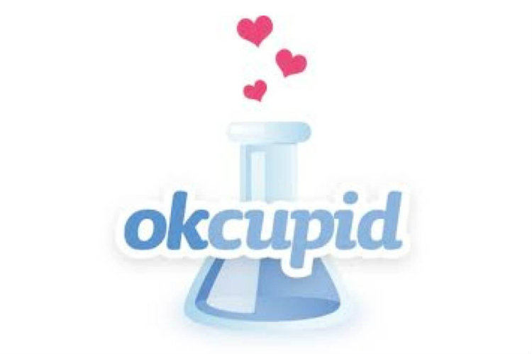

When you're done with your card, send us the link & post it on your Github Pages site. We'll incorporate it into the class site from there.
For next week
Set up up your local development environment by following the steps here.
Check out this HTML/CSS/Javascript sketch and take a look at our version of a digital business card. Make your own account, fork our sketch, and replace Kanye's information and picture with your partner's. When you're done, try to add a new CSS or Javascript effect to your card on Codepen. You can look at the people page on the current class site for some ideas or use this library of basic effects for inspiration.
If you find you are wanting help getting started with HTML, CSS, and JavaScript as you work through the /people activity, you might check out the Tools & Materials page of our course site. You might also begin with MDN's introductions to HTML and CSS and Shay Howe's Learn to Code HTML & CSS. We'll also be digging into our own intro to and demo of the basics of HTML/CSS/JS, which might be of particular use.
When you're really done with your contribution to the people page, share the link to your codepen with us.
Next week, we'll be looking a little more in depth at a-story-in-pomes, so you might take a look at the deployed version to get a feel for the project before we dig into the nuts and bolts of its code.
 
